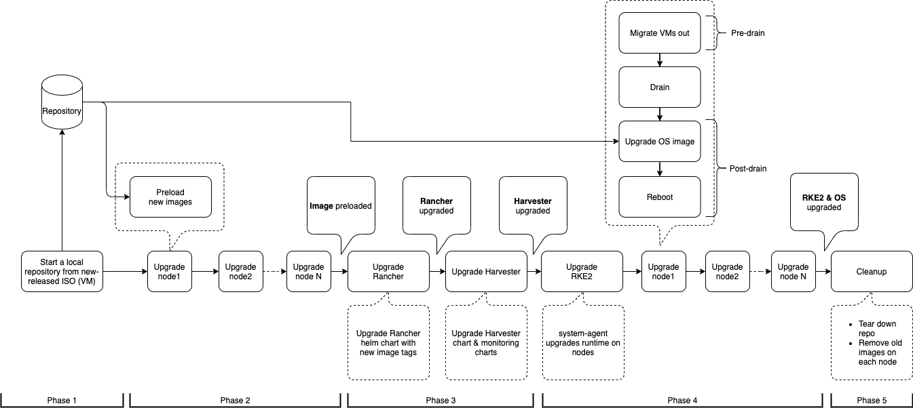
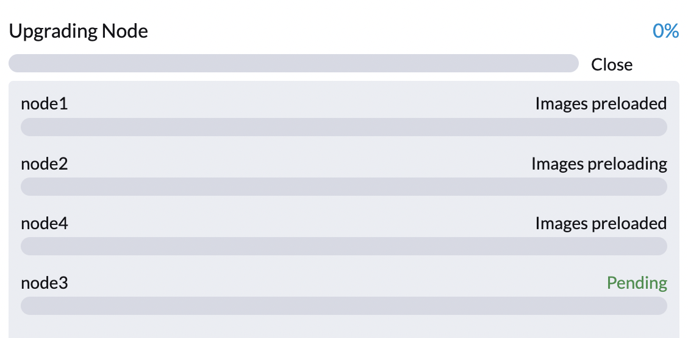
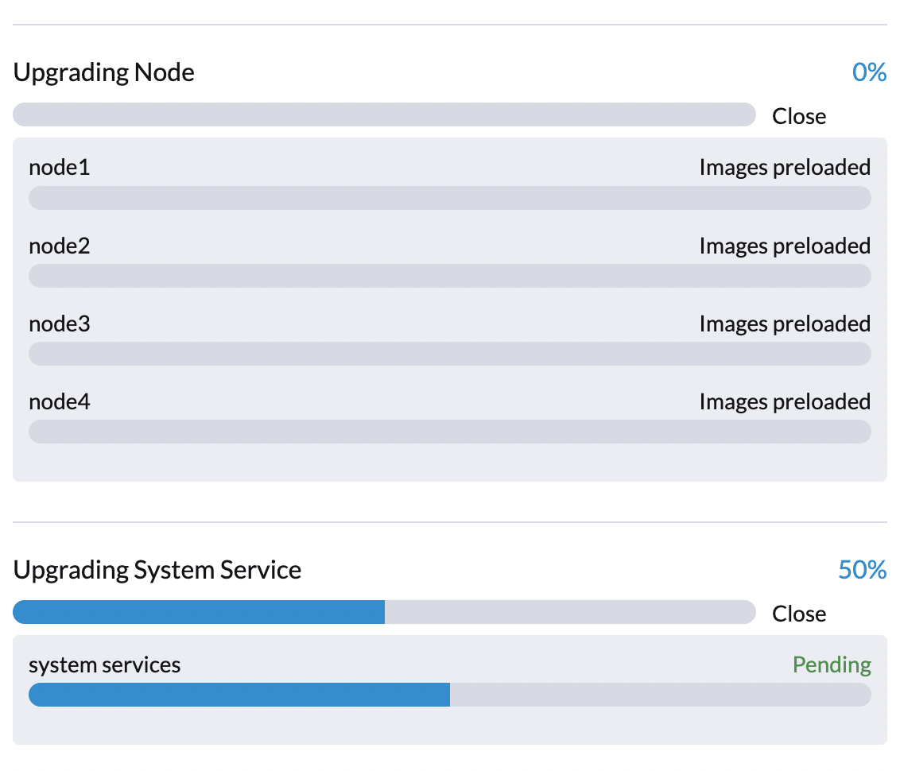
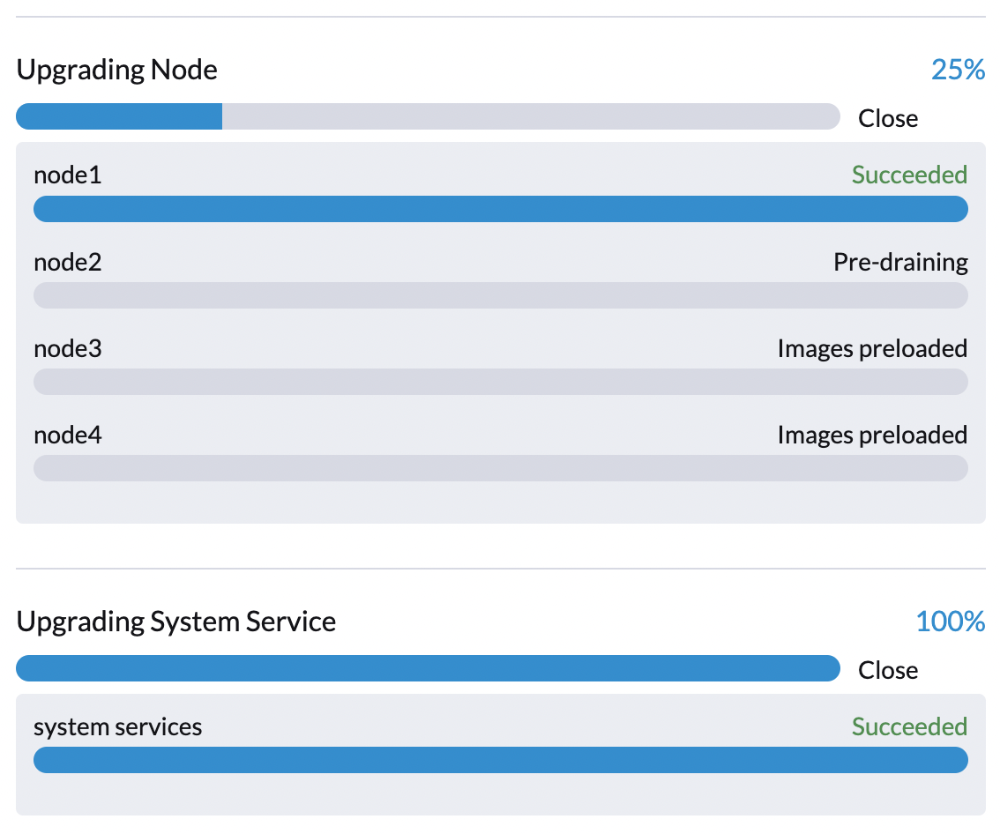

|
この文書は自動機械翻訳技術を使用して翻訳されています。 正確な翻訳を提供するように努めておりますが、翻訳された内容の完全性、正確性、信頼性については一切保証いたしません。 相違がある場合は、元の英語版 英語 が優先され、正式なテキストとなります。 |
トラブルシューティング
概要
アップグレードに失敗した場合のトラブルシューティングのためのいくつかのヒントは次のとおりです。
-
バージョン固有のアップグレードノートを確認してください。サポートマトリックステーブルのバージョンをクリックすると、既知の問題があるかどうかを確認できます。
-
アップグレード 設計提案に目を通してください。次のセクションでは、アップグレード内のフェーズと可能な診断方法について簡単に説明します。
アップグレードフロー
アップグレードプロセスにはいくつかのフェーズが含まれています。

Phase 1:アップグレードリポジトリ仮想マシンを準備します。
SUSE VirtualizationコントローラーはリリースISOファイルをダウンロードし、それを使用してリポジトリ仮想マシンを準備します。仮想マシン名は`upgrade-repo-hvst-xxxx`の形式を使用します。

ネットワーク速度とクラスターリソースの利用状況は、このフェーズを完了するのに必要な時間に影響を与えます。アップグレードは通常、ネットワーク速度の問題により失敗します。
この時点でアップグレードが失敗した場合は、アップグレードを再起動する前にリポジトリ仮想マシンとその対応するポッドのステータスを確認してください。コマンド`kubectl get vm -n harvester-system`を使用してステータスを確認できます。
例:
$ kubectl get vm -n harvester-system
NAME AGE STATUS READY
upgrade-repo-hvst-upgrade-9gmg2 101s Starting False
$ kubectl get pods -n harvester-system | grep upgrade-repo-hvst
virt-launcher-upgrade-repo-hvst-upgrade-9gmg2-4mnmq 1/1 Running 0 4m44sフェーズ2:コンテナイメージをプリロードします。
SUSE Virtualizationコントローラーは、リポジトリ仮想マシンからコンテナイメージをダウンロードしてプリロードするジョブを作成します。これらのイメージは次のリリースに必要です。
すべてのノードにイメージがダウンロードされ、プリロードされるまでしばらく時間をおいてください。

この時点でアップグレードが失敗した場合は、アップグレードを再起動する前に`cattle-system`ネームスペースのジョブログを確認してください。コマンド kubectl get jobs -n cattle-system | grep prepare を使用してログを確認できます。
例:
$ kubectl get jobs -n cattle-system | grep prepare
apply-hvst-upgrade-9gmg2-prepare-on-node1-with-2bbea1599a-f0e86 0/1 47s 47s
apply-hvst-upgrade-9gmg2-prepare-on-node4-with-2bbea1599a-041e4 1/1 2m3s 2m50s
$ kubectl logs jobs/apply-hvst-upgrade-9gmg2-prepare-on-node1-with-2bbea1599a-f0e86 -n cattle-system
...フェーズ3:システムサービスをアップグレードします。
SUSE Virtualization コントローラーは、コンポーネント Helm チャートをアップグレードするジョブを作成します。

コマンド $ kubectl get jobs -n harvester-system -l harvesterhci.io/upgradeComponent=manifest を使用して apply-manifest ジョブを確認できます。
例:
$ kubectl get jobs -n harvester-system -l harvesterhci.io/upgradeComponent=manifest
NAME COMPLETIONS DURATION AGE
hvst-upgrade-9gmg2-apply-manifests 0/1 46s 46s
$ kubectl logs jobs/hvst-upgrade-9gmg2-apply-manifests -n harvester-system
...|
この時点でアップグレードが失敗した場合は、アップグレードを再起動する前に サポートバンドル を生成する必要があります。サポートバンドルには、エラーの原因を特定するのに役立つログとリソースマニフェストが含まれています。 |
フェーズ4:ノードをアップグレードします。
SUSE Virtualization コントローラーは、各ノードで次のジョブを作成します:
-
マルチノードクラスタ:
-
pre-drainジョブ:ノード上の仮想マシンをライブマイグレーションまたはシャットダウンします。完了すると、組み込みの Rancher サービスがノード上の RKE2 ランタイムをアップグレードします。 -
post-drainジョブ:オペレーティングシステムをアップグレードして再起動します。
-
-
シングルノードクラスタ:
-
single-node-upgradeジョブ:オペレーティングシステムと RKE2 ランタイムをアップグレードします。ジョブ名はhvst-upgrade-xxx-single-node-upgrade-<hostname>形式を使用します。
-

コマンド kubectl get jobs -n harvester-system -l harvesterhci.io/upgradeComponent=node を実行することで、各ノードで実行中のジョブを確認できます。
例:
$ kubectl get jobs -n harvester-system -l harvesterhci.io/upgradeComponent=node
NAME COMPLETIONS DURATION AGE
hvst-upgrade-9gmg2-post-drain-node1 1/1 118s 6m34s
hvst-upgrade-9gmg2-post-drain-node2 0/1 9s 9s
hvst-upgrade-9gmg2-pre-drain-node1 1/1 3s 8m14s
hvst-upgrade-9gmg2-pre-drain-node2 1/1 7s 85s
$ kubectl logs -n harvester-system jobs/hvst-upgrade-9gmg2-post-drain-node2
...|
この時点でアップグレードが失敗した場合は、アップグレードを再起動しないでください。 SUSE Supportから指示がある場合を除きます。 |
一般的な操作
アップグレードを再起動する
|
進行中のアップグレードが失敗したり、[Phase 4: Upgrade nodes]で停止した場合は、アップグレードを再起動しないでください。 SUSE Supportから指示がある場合を除きます。 |
-
サポートバンドルを生成します。
-
*アップグレード*ボタンを*ダッシュボード*画面でクリックします。
進行中のアップグレードを停止する
|
進行中のアップグレードが失敗したり、[Phase 4: Upgrade nodes]で停止した場合は、まず原因を特定してください。 |
以下の手順を実行することで、アップグレードを停止できます:
-
コントロールプレーンノードにログインします。
-
クラスター内の`Upgrade` CRのリストを取得します。
# become root $ sudo -i # list the on-going upgrade $ kubectl get upgrade.harvesterhci.io -n harvester-system -l harvesterhci.io/latestUpgrade=true NAME AGE hvst-upgrade-9gmg2 10m -
UpgradeCRを削除します。$ kubectl delete upgrade.harvesterhci.io/hvst-upgrade-9gmg2 -n harvester-system -
一時停止したManagedChartsを再開します。
ManagedChartsは、アップグレードと他のプロセス間のデータ競合を避けるために一時停止されています。すべての一時停止したManagedChartsを手動で再開する必要があります。
cat > resumeallcharts.sh << 'FOE' resume_all_charts() { local patchfile="/tmp/charttmp.yaml" cat >"$patchfile" << 'EOF' spec: paused: false EOF echo "the to-be-patched file" cat "$patchfile" local charts="harvester harvester-crd rancher-monitoring-crd rancher-logging-crd" for chart in $charts; do echo "unapuse managedchart $chart" kubectl patch managedcharts.management.cattle.io $chart -n fleet-local --patch-file "$patchfile" --type merge || echo "failed, check reason" done rm "$patchfile" } resume_all_charts FOE chmod +x ./resumeallcharts.sh ./resumeallcharts.sh
アップグレードログをダウンロードします。
SUSE Virtualizationは、すべてのアップグレード関連のログを自動的に収集し、アップグレード手順を表示します。デフォルトでは、これは有効になっています。そのような動作をオプトアウトすることもできます。

アップグレード中にログアーカイブをダウンロードするには、*ログをダウンロード*ボタンをクリックできます。

ログエントリは、各アップグレード関連のPodごとにファイルとして収集され、中間Podについても同様です。サポートバンドルは、ログやリソースマニフェストを含むクラスターの現在の状態のスナップショットを提供し、アップグレードログはアップグレード中に生成されたログを保持します。これら二つを組み合わせることで、アップグレード中の問題をさらに調査できます。

アップグレードが終了すると、SUSE Virtualizationはディスクスペースを占有しないようにアップグレードログの収集を停止します。さらに、*それを無視する*ボタンをクリックしてアップグレードログを削除できます。

|
`upgradelog-downloader`のデプロイメントとログアーカイブボリュームは、アップグレードの結果に関係なく、アップグレード後もクラスター内で意図的に稼働し続けます。これにより、ログに持続的にアクセスできることが保証されます。 ただし、これらのコンポーネントはクラスターリソースを消費し続け、ストレージネットワーク設定の更新などの特定の操作をブロックする可能性があります（ 問題 #9599を参照）。リソースを解放し、操作をブロック解除するには、次のいずれかのアクションを実行してください：
|
詳細については、 アップグレードログHEPを参照してください。
|
アップグレード関連のログを保存するボリュームのデフォルトサイズは1GBです。エラーが発生すると、これらのログがボリュームの利用可能なスペースを完全に消費する可能性があります。この問題を回避するには、次の手順を実行できます：
|
未使用のイメージをクリーンアップします。
KubeletConfiguration における imageGCHighThresholdPercent のデフォルト値は 85 です。ディスク使用量が 85% を超えると、kubelet は未使用のイメージを削除しようとします。
新しいイメージは、アップグレード中に各 SUSE Virtualization ノードにロードされます。ディスク使用量が 85% を超えると、これらの新しいイメージはコンテナによって使用されていないため、クリーンアップの対象としてマークされる可能性があります。エアギャップ(された)環境では、クラスターから新しいイメージを削除すると、アップグレード処理が中断される可能性があります。
エラーメッセージ Node xxx will reach xx.xx% storage space after loading new images. It’s higher than kubelet image garbage collection threshold 85%. に遭遇した場合は、新しいアップグレードを開始する前に crictl rmi --prune を実行して未使用のイメージをクリーンアップしてください。

スタックしたアップグレードのステータスを確認します。
アップグレードがスタックし、SUSE Virtualization UI にエラーメッセージが表示されない場合は、次の手順を実行してください：
-
コマンド
kubectl get pods -n harvester-system | grep upgradeを使用して、アップグレード処理中に作成されたポッドを確認します。メインスクリプトは
hvst-upgrade-xxxxx-apply-manifests-xxxxxポッドにあります。ログ記録に次のメッセージが含まれている場合、managedChartCR が問題を引き起こしている可能性があります。Current version: x.x.x, Current state: WaitApplied, Current generation: x Sleep for 5 seconds to retry -
コマンド
bundleを使用してkubectl get bundles -ACR に関する情報を取得します。例:
NAMESPACE NAME BUNDLEDEPLOYMENTS-READY STATUS fleet-local fleet-agent-local 1/1 fleet-local local-managed-system-agent 1/1 fleet-local mcc-harvester 0/1 Modified(1) [Cluster fleet-local/local]; kubevirt.kubevirt.io harvester-system/kubevirt modified {"spec":{"configuration":{"vmStateStorageClass":"vmstate-persistence"}}} fleet-local mcc-harvester-crd 1/1 fleet-local mcc-local-managed-system-upgrade-controller 1/1 fleet-local mcc-rancher-logging-crd 1/1 fleet-local mcc-rancher-monitoring-crd 1/1